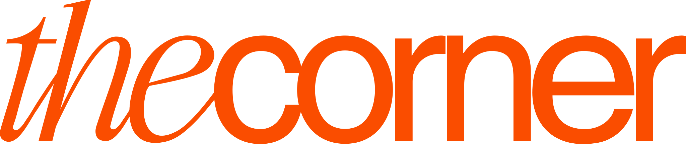
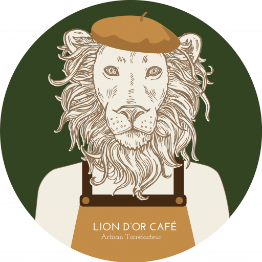

Découvrir l'histoire de

La genèse
Un vrai problème.
Vécu tous les jours.
Aujourd'hui encore, la plupart des étudiants boivent un café industriel, sans vraiment en profiter. La pause ne dure que 10 à 15 minutes : le temps de descendre, de faire la queue, et de remonter avec un café quelconque.
On a voulu répondre à un problème concret : une machine à capsules ramenée dans un sac de sport, pour servir un café correct, direct en salle, entre deux cours. C'est vite devenu une vraie aventure entrepreneuriale.
Le marché du café sur les campus vieillit : une offre standardisée, peu qualitative, rarement responsable. Il y avait vraiment quelque chose à faire.
« C'est entre deux cours que tout a commencé. »
Marceau Barnier, cofondateur

Notre torréfacteur
Le café qu'on sert est un café de spécialité brésilien, torréfié à Lyon par Ioan, notre partenaire chez Lion d'Or Café.

Les fondateurs
Antoine & Marceau.
Deux étudiants lyonnais, partis d'un simple constat et d'une furieuse envie d'agir. On a construit The Corner en faisant, pas en réfléchissant à mille choses. Ce mindset, on l'a depuis le premier jour.
« On veut prouver qu'on peut consommer mieux, sans payer plus. »
Notre mission : redonner de la valeur à la pause café sur les campus étudiants. Faire en sorte que prendre un café entre deux cours redevienne un vrai moment de plaisir, pas un compromis qu'on subit.
Envie d'écrire
la suite avec nous ?
On adore rencontrer les écoles qui veulent offrir mieux à leurs étudiants.
Demander une étude